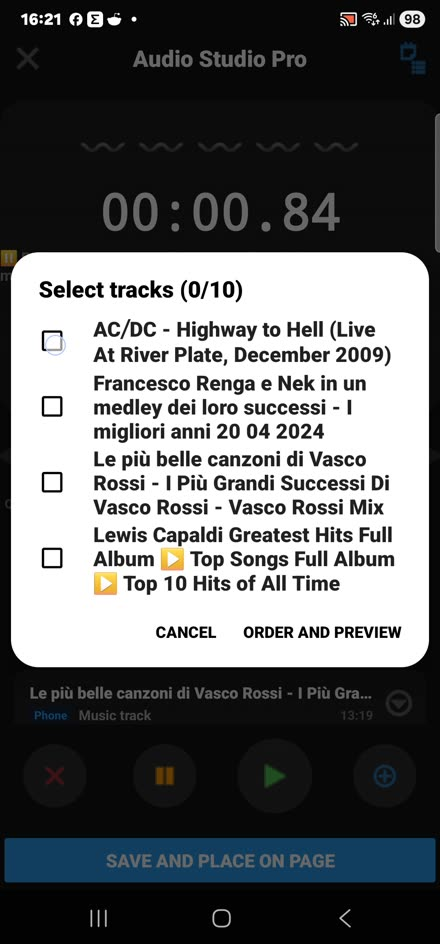
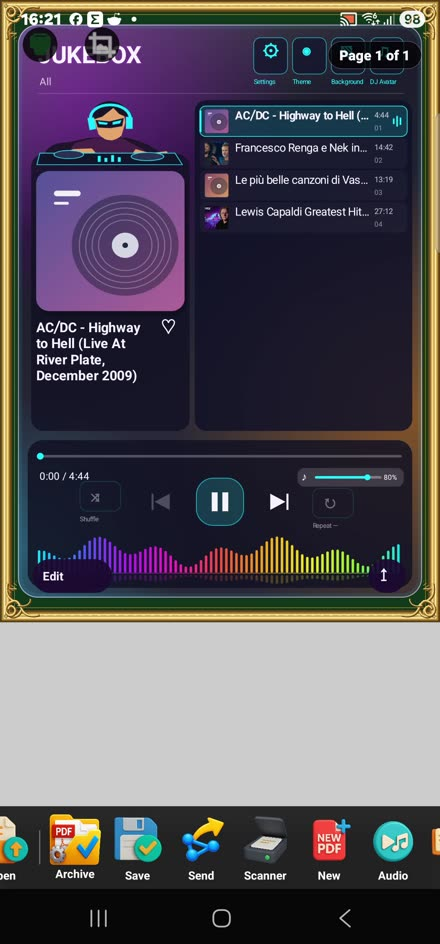
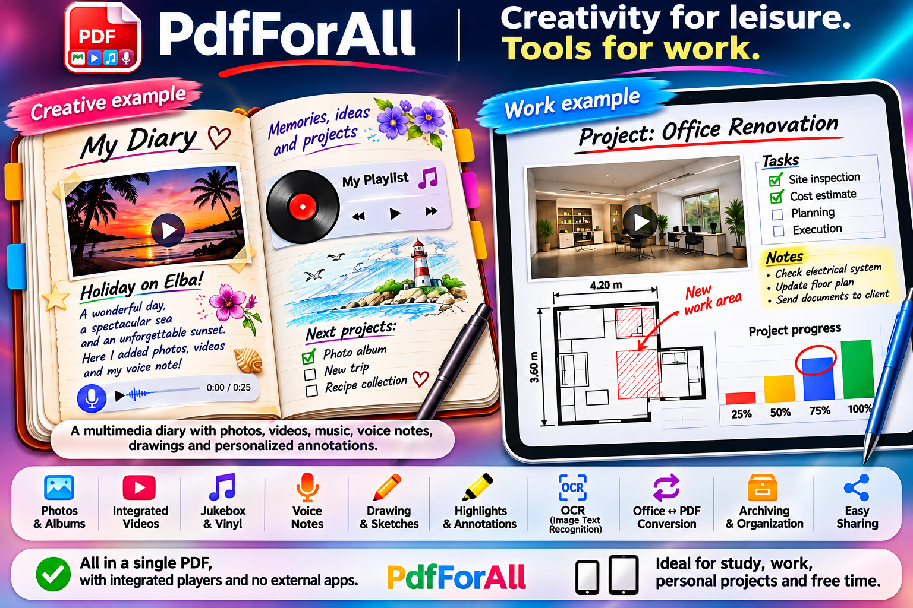
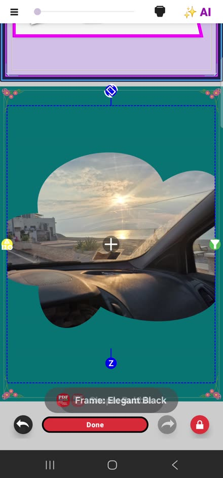
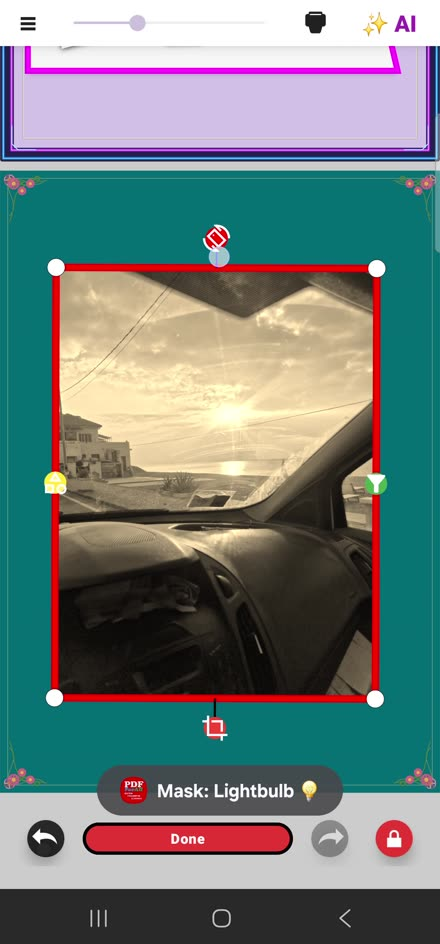
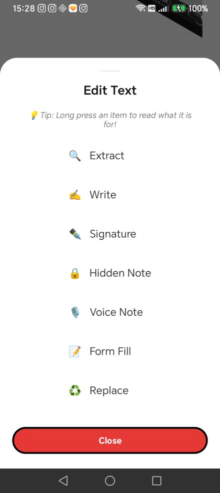
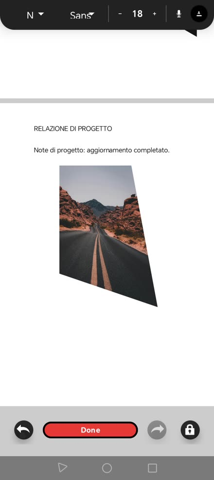
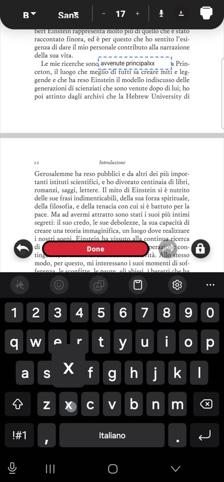
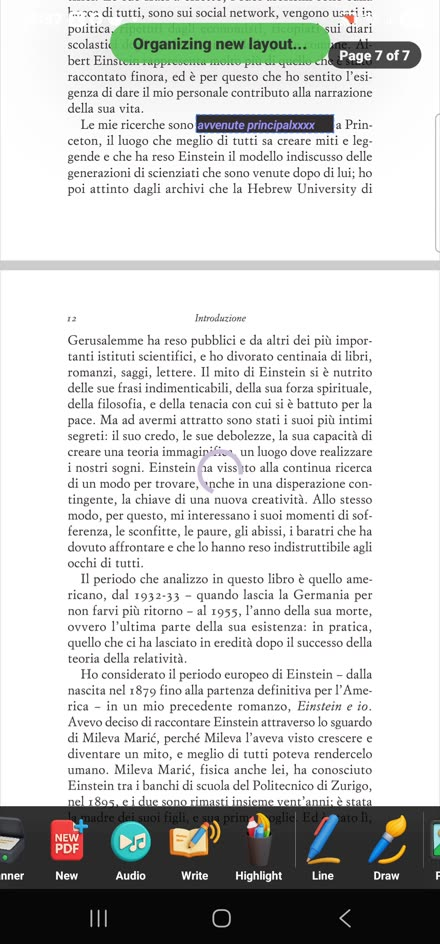
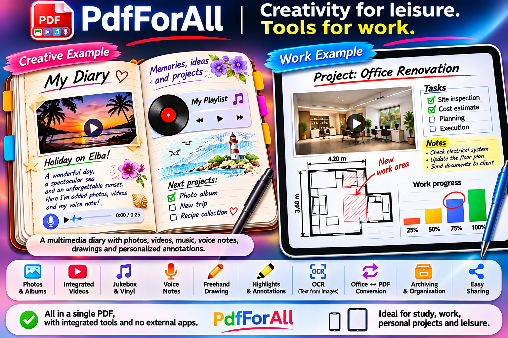

Real app screenshots
MP3 Jukebox
Create a playlist, place it on the page and play it with the built-in controls.
Creativity for leisure. Tools for work.

Create multimedia diaries, organize professional projects and bring photos, music, videos and notes together in one PDF-based workspace. Jukebox, Vinyl and video players are built into PdfForAll: no external links or extra players needed inside the app.
From personal memories to professional projects: different tools working together.


Create a playlist, place it on the page and play it with the built-in controls.


A customizable music player with emoji, frames and on-page playback.



Experiment with photo frames, shapes, perspective and composition.


Insert videos, shape their frame and customize their controls.



Combine photos with written notes and voice annotations.



Edit text, work with document pages and organize your PDF project.
A single workflow for creating, editing and organizing.
Add pages, photos, text, music and videos.
Reorder pages and keep working on editable drafts.
Export and share a document or preserve an editable project.
PdfForAll includes an introductory guide and contextual Spotlight tips to help you discover tools as you use them. You don’t need to learn everything at once.
The introductory guide shows you the workspace and its main features.
Tap tools to open them; where supported, long-press to recall your last selection.
Combine pages, photos, music, videos and notes; then save an editable draft or share the result.
The guide appears during onboarding. A dedicated button to reopen it is planned for a future version.
Additional illustrative examples of what you can make with PdfForAll. The interfaces and toolbars shown in these promotional illustrations are not exact app screenshots.

Personal journals, multimedia albums, notes, site visits and professional documents: PdfForAll adapts to what you create.
Designed to work primarily offline. Some features may require an initial component download.
Discover PdfForAll for Android. Windows is in development.